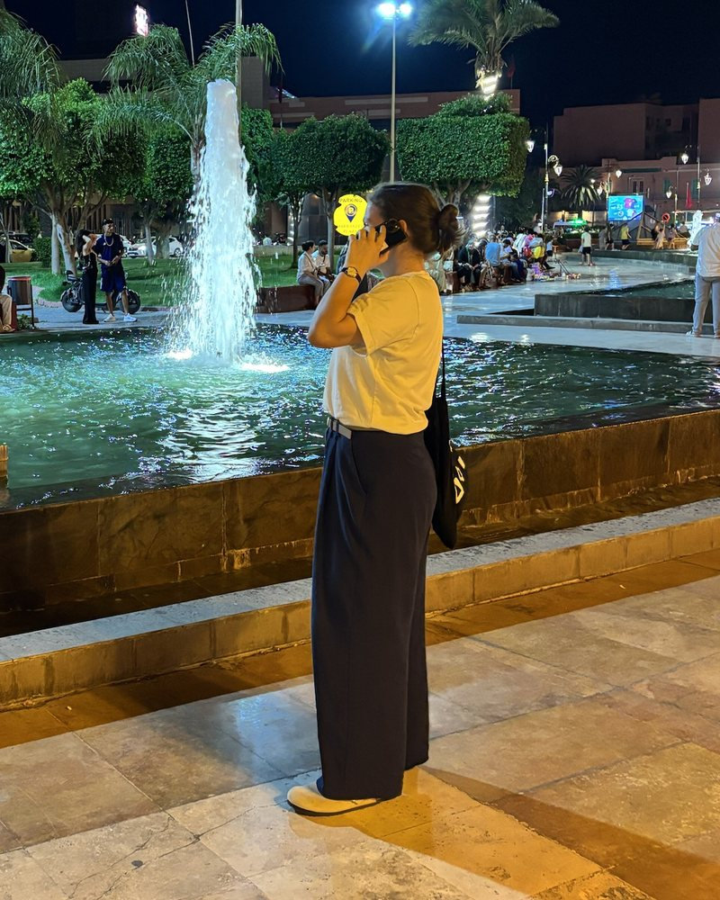

La liberté d'être là pour tes enfants
Les déposer le matin, les récupérer le soir, être au match du samedi. Tes appels se placent autour de ta vie, pas l'inverse.
Et si tu appliques tout sans résultat, je te rembourse.
Ne me crois pas sur parole : regarde d'abord la vidéo.
Appel gratuit de 45 minutes · places limitées chaque semaine
Si tu es ici, tu sais déjà que tu as la fibre commerciale. La vraie question, c'est ce que ça peut changer dans ton quotidien.
La question n'est pas de savoir si tu en es capable, c'est combien de temps tu veux encore attendre ?
Le marché du closing est plein de promesses. Voilà ce sur quoi je m'engage, par écrit.
Si tu appliques tout le programme et que tu n'as encaissé aucune commission au bout des 12 mois, je te rembourse. C'est écrit dans ton contrat.
37 missions en 3 ans et plus de 1,5 million d'euros de ventes générées. Je prends encore des appels chaque semaine.
Tu ne règles la seconde partie qu'une fois tes premières commissions encaissées.
Montants, étapes, conditions : tout est écrit noir sur blanc. Et tu as 14 jours pour changer d'avis.
J'écoute les appels de chacun. Quand je ne peux plus suivre correctement, je refuse des candidatures.
90 jours pour te lancer, puis 9 mois de suivi. Je ne disparais pas après la vente.
Si tu as déjà regardé des contenus sur le closing sans jamais te lancer, ce n'est pas un manque de motivation. C'est la méthode qui ne marche pas. Ici, tu répètes sur de vrais appels, corrigés un par un.

À la base, rien ne me prédestinait à la vente. Je viens d'une famille d'ouvriers. J'étais la bonne élève : des bonnes notes, le foot en sport-études, un bac général. Le parcours classique. Sauf que j'ai toujours eu une âme d'entrepreneure. Je n'ai jamais aimé qu'on me donne des ordres.
Après le bac, en 2022, je ne me voyais pas continuer ma vie là où j'étais. Et partir dans les études, ça m'angoissait énormément. Alors je suis partie un an à Gênes, en volontariat, et je suis tombée amoureuse de la ville. Avec mes parents, le pacte, c'était : après le volontariat, tu reprends les études. On s'est mis d'accord : je les reprends, mais en Italie.
Le jour de la rentrée, le directeur est venu nous dire : « Les entreprises attendent des bons salariés comme vous. » Je me suis pris un mur. Tout ce sur quoi je m'étais construite, je venais de le voir en face. En sortant de la fac, je tremblais, je pleurais. Et je me suis demandé : qu'est-ce que je fais maintenant ? Seule en Italie, sans famille, avec très peu d'argent, pas de revenus et un loyer à payer.
J'avais 19 ans. J'avais mis un peu d'argent de côté en travaillant à l'usine, et j'ai tout mis dans une formation en ligne. Autour de moi, tout le monde me disait que c'était une arnaque. Personne n'y croyait. C'est là que j'ai découvert le closing, et j'ai travaillé comme une acharnée.
Aujourd'hui, ça fait presque 3 ans : 37 missions et plus d'1,5 million d'euros de ventes générées pour les entrepreneurs avec qui j'ai travaillé. Mais je vais être honnête avec toi : pendant longtemps, j'ai travaillé non-stop et je me suis complètement oubliée. C'est là que j'ai compris que l'argent, c'est bien, mais que ce qui compte vraiment, c'est la liberté qu'il t'apporte.
Ce jour-là, on m'a dit que les entreprises attendaient des bons salariés. Aujourd'hui, c'est moi qui choisis les entreprises avec qui je travaille. MAESTRO, c'est ça : te montrer le chemin, sans que tu refasses mes erreurs.

Le closing, ce n'est pas forcer les gens à acheter.
C'est écouter quelqu'un, vraiment.
Et l'aider à prendre une décision.
Peu de gens savent le faire.
C'est pour ça que ça se paie bien.
Moi, ça m'a rendu ma liberté.
J'ai créé MAESTRO pour que ça te fasse la même chose.
AlexandraFondatrice de MAESTRO
45 minutes, en visio, pour voir ensemble si ce que je propose correspond vraiment à ce que tu cherches.
Je t'apprends ce que je fais. Voilà ce que ça a donné pour moi en près de 3 ans.
Je comprends, j'ai vu les mêmes pubs que toi. La différence, c'est que je close encore aujourd'hui, que mes chiffres sont réels et que tout ce que je te promets est écrit dans un contrat. Pendant l'appel, pose-moi toutes les questions qui te piquent. Si je ne peux pas te répondre clairement, ne signe pas.
Je te rembourse. Par contre, je ne rembourse pas quelqu'un qui n'a pas joué le jeu. Si tu as été présent aux coachings, que tu as fini la formation, que tu as fait au moins 2 role plays par semaine, que tu as rendu tes exercices et que tu as été régulier du début à la fin, et que malgré ça tu n'as encaissé aucune commission au bout des 12 mois (les 90 jours puis les 9 mois de suivi), je te rends ce que tu as payé. Tout est écrit dans le contrat, je te le montre pendant l'appel.
C'est justement pour toi que je l'ai construit comme ça. On démarre à côté de ton CDI, sur des créneaux que tu choisis. Le soir, le week-end, à la pause déjeuner : tes appels se placent autour de ta vie. Pendant l'appel, on regarde ensemble combien d'heures tu peux vraiment libérer, sans te mentir.
Si tu aimes parler aux gens et qu'on t'a déjà dit que tu ferais un bon commercial, tu as l'essentiel. Le reste, c'est de la technique et de l'entraînement : tu répètes avec moi avant de prendre de vrais appels, et j'écoute tout.
Moi aussi, j'ai pris ce risque à 19 ans. Ce qui ne marche pas, ce sont les vidéos qu'on regarde seul. Ici, je suis tes appels un par un, je te prépare aux entretiens et une partie du prix n'est due qu'après tes premiers résultats.
Non. Tu gardes ton salaire pendant que tu construis tes revenus de closer. Le jour où tes commissions te permettent de partir sereinement, c'est toi qui décides. Et si tu préfères garder les deux, c'est très bien aussi.
Parce que je préfère d'abord savoir si je peux vraiment t'aider. Si ce n'est pas le cas, je te le dis et on s'arrête là, sans que tu aies à te poser la question du prix. Si c'est le cas, je te donne tous les montants pendant l'appel, sans détour.
Je ne vais pas te sortir un chiffre magique. Ça dépend de ta mission, du temps que tu y mets et de ton travail. Pendant l'appel, on fait le calcul ensemble avec tes vrais chiffres, et tu verras ce qui est réaliste pour toi.
C'est normal, il ne me connaît pas. Viens à l'appel avec lui. Il entendra les mêmes réponses que toi, et vous déciderez ensemble.
On le fait ensemble, étape par étape, avant même ta première commission. Ce sont quelques démarches à faire une fois, pas une montagne.
Réserve ton appel de candidature. Dans le pire des cas, tu repars avec une vision claire de ce que tu peux faire.
Réserver mon appel de candidature